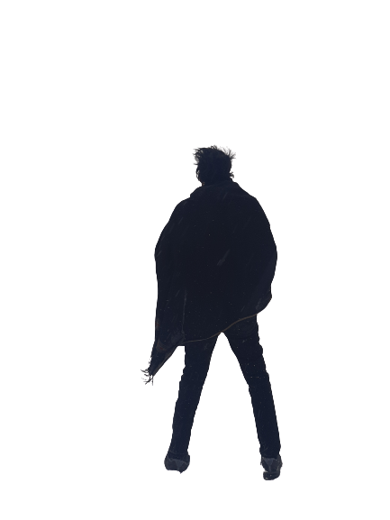

Back from the Dead

Wondering where to begin...
On July 6th 2020, I graduated from university - not in a fancy hall accompanied by a lavish
ceremony, but quietly in my dorm room in Amsterdam. No red carpets welcomed me to the end of
this journey, they were replaced by the pixels of my computer screen — projecting some semblance
of a hastily put-together graduation that was live on YouTube. Courtesy of the Coronavirus, I
was unfortunate enough to graduate during the one year they didn’t have graduations in 100
years.
I didn’t mind much be honest, it was still a victory and I treated it as such. I got dressed in
my best clothes and had my hair trimmed earlier in the morning to match the occasion. I held my
head up high and was proud to be the first member of my family to finish their undergraduate
from a foreign university. I can’t encapsulate in words how much this moment meant to me at the
time.
I distinctly remember an occasion a few years back in high school. The student counsellor packed
all the seniors in an auditorium and asked us where we wanted to go for college. Numerous
answers spewed forth, with a flurry of my colleagues declaring their intention to go to the
United Kingdom or the United States - to this Ivy league college or that. I was different. I
proclaimed that I wanted to go to Amsterdam. Laughter ensued. Looking back, even I am not sure
if I was serious when I declared this intention. I was simply tired of the binary nature of the
discussion regarding where you wanted to go to college that was apparent in my society at the
time. If you’re going to college outside Pakistan, you either go to the UK or the USA, little
consideration is given to other alternatives. I craved something else, a respite from the
ordinary — a truly unique experience. That moment was probably the start of my journey to get
admitted into college.
After high school, I was rejected from over 40 universities before I was accepted into Amsterdam
University College. That in itself is another story. Let me digress by saying that it was no
easy task to get to this university in the first place. A gap year, multiple bureaucratic
hurdles and painful memories of rejection after rejection come to mind. I watched as one by one,
the friends who’s college essays I wrote, gained admission to the universities of their choice
while I ironically faltered. I never gave up though, and was rewarded for my perseverance with
admission to AUC.
Coming to Europe was a dream come true, I had never been to the mainland and when I landed in
Amsterdam I did not know a single soul — a beautiful clean slate that I had for so long desired.
Life did not end with admission, it only grew more complicated. Europe was very foreign to me
and it took me some time to adjust — the first few months were abundant with bipolar-esque ups
and downs. Don’t get me wrong, I loved it, but like Alice in Wonderland I found myself spiraling
into the rabbit hole — living an unsustainable lifestyle that took its toll on me. I had to take
a break from university after my first year to focus on my mental health. I’m very fortunate to
have had the help of good friends and family throughout this time — my support network allowed
me to buildup the resolve to face my issues. I now had two options in front of me, to either
stay in Pakistan and begin anew or return to Amsterdam and finish what I had started.
The thing is, I am a person who wants to be able to look at himself in the mirror in morning,
without contempt or shame or disappointment. As someone who does not always like the person
staring back, the choice was obvious — and I was no quitter. I returned to Europe.
Prior to this return, anxiety gripped the core of my being. Would my friends think any
differently of me I wondered? Simply imagining conversations with people I knew churned a knot
in my stomach. For months I would play scenario’s back and forth in my head, mentally preparing
myself for the worst my mind could imagine. All these concerns evaporated the moment I met my
friends again, who accepted me back with open arms, simply happy they were able to enjoy my
company. I was humbled beyond what words can convey and hold gratitude for this to this day.
The next few semesters I worked harder than ever before to make up for time lost. Hard work —
coupled with a reality-inscribed dose of failure every now and then - kept me level. I took
extra courses in each of my remaining semesters in college. With grit and clenched teeth I
quietly and confidently turned my ‘Dark Ages’ into a ‘Renaissance’, and flourished. I actually
started applying myself and reaped the rewards of my efforts — better grades than I had ever had
before, a genuine admiration for the pursuit of knowledge and company unlike any other. I even
fell in love with the woman of my dreams — Kristine.
It was not long however, before I was faced with the next challenge of my career — writing my
thesis. As a cunningly masterful procrastinator, I had not even begun to think about my thesis
till the last possible moment. Seemingly out of nowhere, deadlines began to loom in front of me
— with the additional threat of the Coronavirus silently advancing upon society. During this
time I had a single idea based off a course I took called ‘Big History.’
‘Big History’ is not like normal history. Usually we read about the history of say Europe in the
19th century, or Africa during periods of colonization. The point being that when we typically
study history, it is limited in approach to a specific period in time and space. Big History
rises above that — it is in essence the history of the entire universe, 13.7 Billion years of
history condensed into one subject. It encapsulates all of existence from the Big Bang to the
modern day. As a history major, the thought of writing a thesis related to Big History struck me
like a eureka moment — but could it be done?
In February 2020, I asked my Big History professor at university what she thought about writing
an undergraduate thesis paper on Big History. She gave me some words of encouragement but warned
me that time was short — I only had a few months to finish the paper and I still hadn’t even
decided on the topic. That’s when the idea of writing a paper on the Big History of Colonization
formed in my head — the entire history of colonization and expansion from the dawn of humanity
to the present and perhaps even the future. My professor said it could not be done, that PhD
students had tried and failed to create a paper so extensive — and I had less time and
experience than them. It was a seemingly insurmountable task.
That didn’t stop me. I resolved to attempt this feat of academic literature in the time I had
left, just a handful of months. Meanwhile, the pandemic came into full force. In March, my
friends and I watched with disbelief as the Prime Minister of the Netherlands announced the
first measures to combat the virus. The university closed its halls the same day. It was
unbelievable that such a once in a generational event would occur whilst I was on the verge of
writing my thesis and graduating. Of course the world goes to shit now I thought. Almost poetic.
As society began to close in on itself, I too found myself limited to the small interior of my
dorm room in Amsterdam. It was here that I would have to write the bulk of my thesis, while
balancing the rest of my courses and mental health. It was quite a challenge. But I endured it.
More often than not there did exist days of acute dissatisfaction, demotivation and despair —
days where I hated myself for not being productive. Yet somehow, amid the plague raging outside
and the rage plaguing my insides — I found a way to keep it all together. This was in no small
part due to Kristine, my constant pillar of support during the pandemic and life. I held on,
sometimes staying awake for days on end for a sliver of inspiration to push me forward.
Those restless nights were eventually vindicated; In the end the word count of my thesis came
down to 12,496 words — four short of the limit. The entirety of human colonization, colonialism
and expansion, the past, the present and the future — manifested within 64 pages of literature.
The first such ‘Big History of Colonization.’ I had done it. I called it ‘Scramble for the
Stars: What the Big History of Colonization, Human Expansion and Colonialism tells us about
the Future of Colonization’ — a play on words of the ‘Scramble for Africa.’
I was fucking proud if it, still am.
Of course, this pinnacle of my academic achievement was not mine alone, but also that of the
people around me who helped me during these long years of booms and depressions. Especially my
parents, who continued to have faith in their son when I would have long since abandoned it.
When I step back and take a look at what my parents have sacrificed for me, I am always
incredibly humbled.
Regardless, I submitted the monstrosity on the 4th of July 2020 at 11:01pm and graduated two days
later on the 6th.
We’ve come full-circle now, almost.
Years of effort and progress, growth and decay, perseverance and pain that began in high school
had culminated in this moment — my crowning achievement academically and personally. I could now
look at myself in the mirror and be proud of the man I had become, for I had risen to heights I
always knew I could achieve and despite the odds, finished university on my terms.
I didn’t need a gigantic ceremony, for the fulfillment that I craved — inner fulfillment — had
been found. It was a truly sublime moment. Transcending almost.
Perfection.
I was finally where I wanted to be, who I wanted to be.
I wish this story ended here.
Sixteen days later I was hit by a train.
That was six months ago today.
I don’t know how much I can write on this topic yet, for though it has been in my mind to write
this piece for several months — the thought of engaging with the trauma has been difficult. I
still don’t know how to put what I went through in words, but consider this a start.
The accident came at the worst possible time, if there was ever a good time for such a disaster.
Sixteen days was the time I was allotted to revel in my success before it was taken from me. But
my victories at university were the last thing on my mind as I awoke from a medically induced
coma. I was just happy to be alive. To see the faces of my loved ones. If only I had not caused
them so much pain.
Broken ribs, heavily fractured skull, shattered right leg and broken left arm, kidney damage,
liver damage and more… I had the works. I was gone. Believe me when I say it is nothing
short of a miracle that I am able to write these words, I mean who comes back from something
like that?
Alhamdulillah.
It seems I have much to do on this Earth.
So here I am, once again I must pass through the crucible of human existence, the most trying of
times. This occasion definitely more so than any prior. Such harrowing days I cannot begin to
describe I have been through. The very worst of desolation and despair, like everything I fought
for had been swept away. I shudder when I think about the days and months following the
accident— the damage to myself, to the woman I love, to my family, to my friends. Waves of
disappointment bear down upon me.
Yet…here I am. I persist.
The worst days are behind me, but the rest of my life is to follow.
I will heal, I will pick up the pieces of my life again, brandishing sheer will as my weapon in
the face of the demons that dare to reside in my heart — I don’t have the luxury to fail.
So, like before, I am now confronted with only two options, either I come back from this or I
don’t — and you should know by now that I am not one to cave to seemingly insurmountable odds.
Arsalan Ali Aga
22nd January 2021